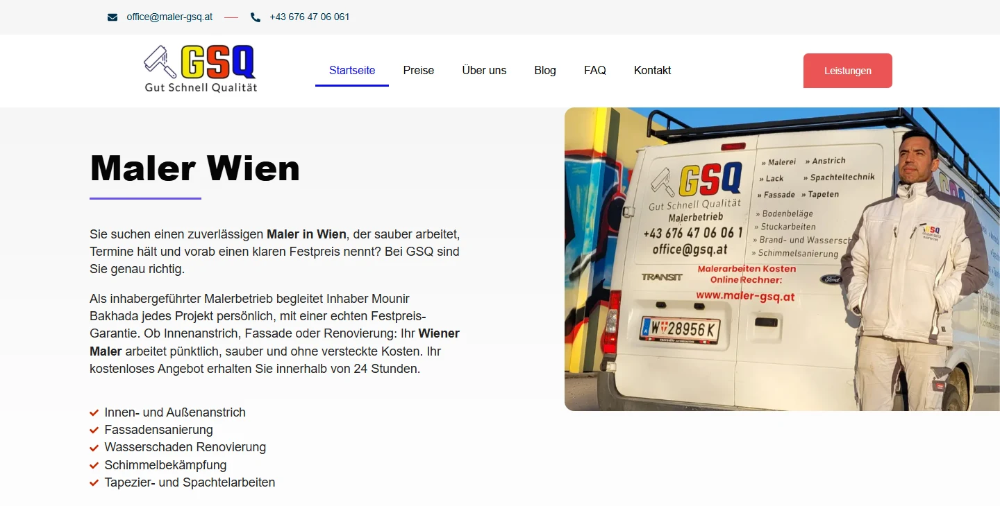

maler-gsq.at

01
Fondations techniques
Avant d’écrire, le site avait besoin d’une structure propre et de signaux locaux clairs pour Google.
- Structure du site et maillage interne propres
- Schema LocalBusiness et Service
- H1 de la page d’accueil sur la requête principale « Maler Wien »
- Suivi Google Search Console et GA4